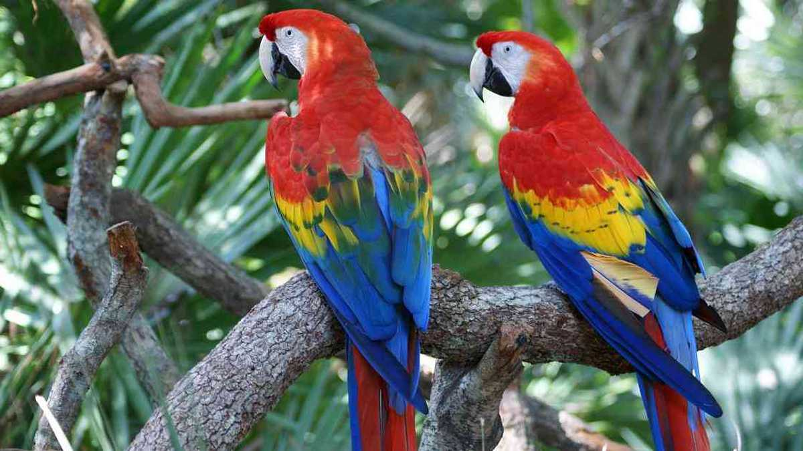
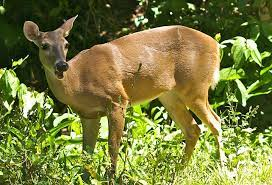
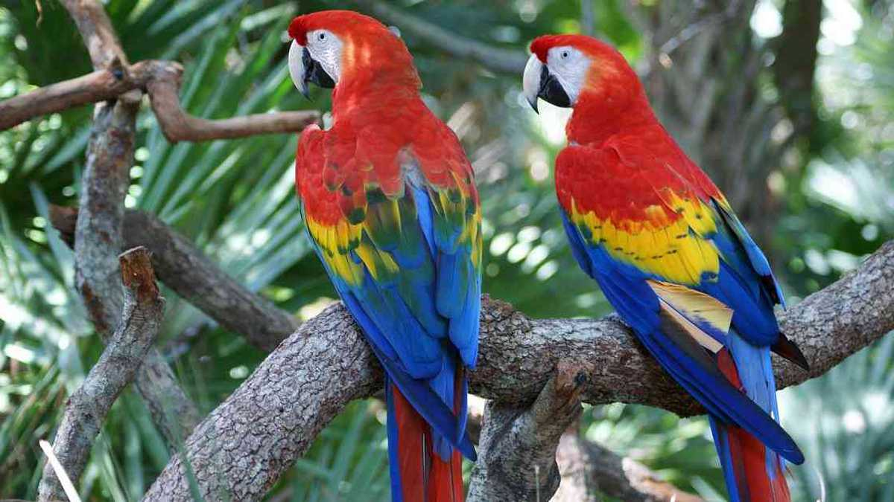
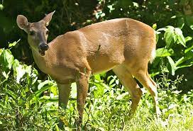

Empezamos esta lista de la fauna de Nicaragua en peligro de extinción con el oso hormiguero gigante, que es uno de los mamíferos más característicos de Suramérica. Se distribuye ampliamente desde Guatemala hasta el Norte de Argentina. Entre las especies exclusivas nicaragüenses en peligro de extinción está la rana leopardo isleña y la salamandra anolis isleño, que solamente se encuentran en el archipiélago de Corn Island, ubicado en el mar Caribe.
Nicaragua es el pais centroamericano, de mayor extencion, cuenta con una gran biodiversidad. Comprende 68 ecosistemas diferentes, de tipo terrestre y acuatico que, contienes mas de 14.000 especies de animales invertebrados y 1.800 de vertebrados. La degradacion la fragmentacion y la perdida de habitats son las principales causas por las que numerosos animales de nicaragua son considerados especies en peligro de extincion. para saber que se puede hacer para ayudar a preservar las especies en peligro de extincion.


 


